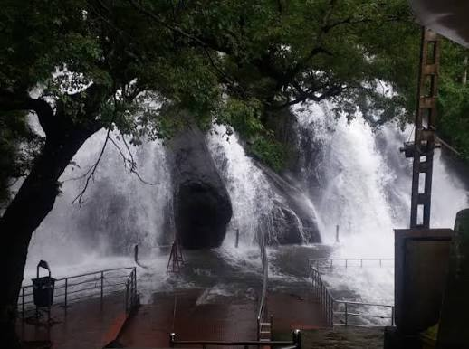

WELCOME TO TENKASI, TAMIL NADU
Follow the
water.
From the famed cascades of Courtallam to temple towns and the green Western Ghats, find inspiration for a refreshing Tenkasi trip.
Explore waterfalls & nature
LAND OF CASCADES & HILLS
YOUR JOURNEY, YOUR PACE
Green escapes.
Local stories.
Listen to water tumble over rock, take a quiet break beneath the hills, or spend time discovering a centuries-old temple. This guide brings together well-loved sights and thoughtful ways to explore the Tenkasi region.
PLAN YOUR NEXT JOURNEY
Waterfalls, hills & heritage.
 01 / NATURE
01 / NATURE
Courtallam & the hills
Plan a refreshing visit to Courtallam's falls, then explore nearby viewpoints, reservoirs, and Western Ghats scenery.
Explore nature & waterfalls 02 / HERITAGE
02 / HERITAGE
Temples & old towns
Visit Tenkasi's historic temple, the hilltop shrine at Panpoli, and the temple town of Sankarankovil.
Explore temples & heritage